Classification: Confidential
Enclosure: Partnership proposal (PDF)
27 July 2026
Head Office
Broz Tito Street (Kazanchis)
Addis Ababa, Ethiopia
Dear Sir/Madam,
On behalf of Seqela, we are pleased to submit this partnership proposal to the Development Bank of Ethiopia. DBE prepared and shared the Cashflow-based MSME loan appraisal Excel workbook so banks and MFIs could appraise MSME projects on cashflow capacity — not collateral alone. That methodology is sound. Adoption at scale is still blocked by spreadsheet variance, version drift, and weak operational workflow.
Seqela has fully digitized that workbook into a working AI-powered Credit Intelligence platform — seven guided sheets, DSCR and stress gates, bilingual document authentication, GPS collateral evidence, and multi-level committee decisioning — already proven in live Ethiopian MFI operations.
We respectfully request DBE’s partnership to champion sector adoption and help make the platform affordable for commercial banks and microfinance institutions — so the methodology DBE promoted becomes standard practice, not a file on a desktop.
We are ready to present a live demonstration to Credit, MSME/lease financing, IT, and partnership leadership, and to design a co-branded rollout and affordability model with DBE.
Thank you for your time and for DBE’s leadership in cashflow-based MSME finance.
Yours sincerely,
For Seqela
Business Development · Credit Technology Solutions
info@seqela.com · +251 964 790 724 · seqela.com
Prepared for
Development Bank of Ethiopia
የኢትዮጵያ ልማት ባንክ · Your Development Partner · Head Office, Addis Ababa
From DBE’s MSME Excel to a National Credit Factory
Seqela digitized the Cashflow-based MSME loan appraisal workbook DBE shared with banks and MFIs — and is ready to partner so the methodology scales affordably across the financial sector.
Contents
Preceded by: Cover letter · Formal title page. Page numbers appear in the footer of this PDF.
- 1.Executive summary & the ask to DBE
- 2.DBE’s Excel — intent vs adoption reality
- 3.Why banks & MFIs still struggle with the workbook
- 4.What Seqela built — Excel-faithful automation
- 5.Live system evidence — dashboards & pipeline
- 6.Module A — Intake & document authentication
- 7.Module B — 7-step cashflow appraisal (MSME)
- 8.Module B2 — Corporate appraisal mode
- 9.Module C — Scorecard, gates & analysis assist
- 10.Module D — GPS collateral & evidence packs
- 11.Module E — Committees & approval queues
- 12.Partnership model with DBE
- 13.Affordability path for banks & MFIs
- 14.Reference case — DECSI
- 15.Implementation & sector rollout roadmap
- 16.Next steps & decision request
- 17.Appendix — screenshot index & glossary
Document control
| Item | Detail |
|---|---|
| Audience | DBE Credit, MSME/Lease Financing, IT, External Fund & Credit Management, Partnerships, Executive sponsors |
| Purpose | Secure DBE partnership to digitize and scale cashflow-based MSME appraisal across banks and MFIs — affordably |
| Evidence | Screenshots from a live instance of AI-powered Credit Intelligence (July 2026); methodology aligned to DBE cashflow MSME workbook |
| Positioning | Complements DBE’s role as methodology owner and wholesale/development partner; does not replace DBE core systems |
1. Executive Summary & The Ask to DBE
The ask: Partner with Seqela to endorse, co-brand, and roll out a digital platform that faithfully automates DBE’s Cashflow-based MSME loan appraisal Excel — and help structure an affordable path so commercial banks and microfinance institutions can adopt it at scale.
DBE prepared the Excel workbook and shared it so institutions financing MSME projects could underwrite on cashflow capacity, DSCR, character, E&S, and collateral coverage — not informal judgment or collateral alone. That was the right national standard.
The remaining gap is operational: Excel files fork by branch, formulas change quietly, officers re-key data, committees receive incomplete packs, and smaller MFIs cannot afford to build their own systems. Seqela has already closed that gap with a live platform used in Ethiopian MFI credit operations.
What DBE gets from saying yes
- Mission delivery: The methodology DBE promoted becomes enforceable practice, not a shared file.
- Portfolio quality upstream: Better appraised MSME files from partner banks/MFIs in wholesale and project ecosystems.
- Sector leadership: Visible digital public-good role — standard tool + affordability pathway.
- Optional DBE use: Same platform can support DBE’s own MSME/lease appraisal workflows if desired.
2. DBE’s Excel — Intent vs Adoption Reality
The Cashflow-based MSME loan appraisal workbook was designed to give banks and MFIs a common, rigorous way to assess MSME projects — especially where physical collateral is thin and repayment capacity must be proven.
What DBE shared (intent)
- Standard MSME cashflow appraisal language
- Character / qualitative factors
- Cashflow, DSCR, stress testing
- E&S screening
- Collateral worksheet & decision summary
- Shared freely / promoted to FIs
What still happens in practice
- Multiple Excel versions across branches
- Formula edits and local “shortcuts”
- No enforced completeness gates
- Weak document & GPS evidence linkage
- Committee packs assembled manually
- Smaller MFIs struggle with capacity & cost
Why this matters for DBE now
- DBE finances and enables MSME ecosystems through project finance, lease finance, and wholesale channels to banks/MFIs.
- If partner FIs underwrite inconsistently, portfolio quality and development outcomes suffer upstream.
- Digitizing the methodology DBE already authored is the highest-leverage way to raise standards sector-wide.
- Affordability matters: without a shared platform model, only large banks can build; MFIs stay on fragile spreadsheets.
3. Why Banks & MFIs Still Struggle with the Workbook
When the national methodology lives only as Excel, banks and MFIs pay in cycle time, uneven risk, and audit cost — and DBE’s standard does not travel intact:
| Pain point | What happens | Cost to banks / MFIs |
|---|---|---|
| Slow multi-level approvals | Files wait on desks; sequential Branch → District → HO handoffs | Lost customers, overtime, weak CX |
| Inconsistent Excel appraisal | Different officers apply different spreadsheet logic | Uneven portfolio quality across branches |
| Incomplete / weak documents | Customers return 2–3 times; weak identity checks | Rework, fraud gaps, delayed analysis |
| Collateral evidence gaps | Photos via WhatsApp; GPS unclear; coverage debated | Committee returns; weak security |
| No single pipeline view | “Where is my loan?” unanswered; late manual reports | Management by guesswork |
| Audit reconstruction pain | Rationale scattered across paper, email, Excel | High audit cost; regulatory findings |
| CBS re-keying | Same customer data typed again into appraisal | Typos, mismatches, delay |
| Rural connectivity | Field work stalls without reliable signal | Incomplete valuations; rescheduling |
The following sections show, with live screenshots, exactly how Seqela’s platform removes each of these frictions while staying faithful to DBE’s cashflow MSME sheets.
4. Day in the Life — Excel Workbook vs Digital Factory
Today — with shared Excel only
- Customer returns repeatedly with missing documents
- Officer re-keys CBS data into Excel
- Appraisal standards vary by officer
- Field photos informal; location disputed
- File sits waiting for physical sign-offs
- Committee gets incomplete packs
- Audit reconstruction takes days
Typical cycle: 2–6+ weeks
With Seqela’s digital factory (DBE-faithful)
- Guided checklist + OCR blocks incomplete packs early
- Customer number prefills Sheet 1 from CBS
- One enforced 7-step methodology bank-wide
- GPS-attested visits; evidence pack for voters
- Digital queues with notifications
- Committee sees scorecard, DSCR, E&S, coverage
- Full trail: who did what, when, why
Target cycle: days, not weeks
End-to-end lifecycle (8 stages)
- Intake — Create request; assign officer; customer number; CBS pull
- Documents — Checklist; OCR eng+amh; identity match; verify/reject
- Appraisal — Seven MSME/corporate sheets with policy gates
- Collateral — Building/land/movable; GPS field; offline tablet
- Governance — Submit & lock; unlock requests; engineering QA
- Pre-committee — Operations and finance manager queues
- Committee — Amount-routed multi-level vote; pack; return option
- Booking — Handoff to core banking for disbursement
End-to-end system flow
Application → documents → collateral → appraisal → authorization → disbursement.
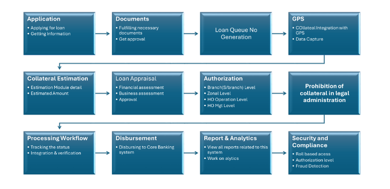
5. Solution Overview — Live System Evidence
The screenshots in this proposal were captured from a live running instance. They show the operator experience banks and MFIs would use — not mockups — and map sheet-by-sheet to the Cashflow-based MSME loan appraisal workbook.
5.1 Management dashboard & pipeline visibility
Problem solved: No single view of Total / Approved / Pending / Rejected; late manual reporting.
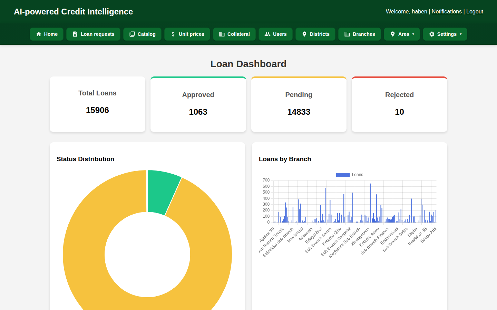
Bank benefit: Executives and admins manage by exception. Branch hierarchy is first-class (Districts / Branches / Area).
5.2 Centralized loan request pipeline
Search by name/ID/phone, filter by status and date, see assignment and review dates, and act from one table.
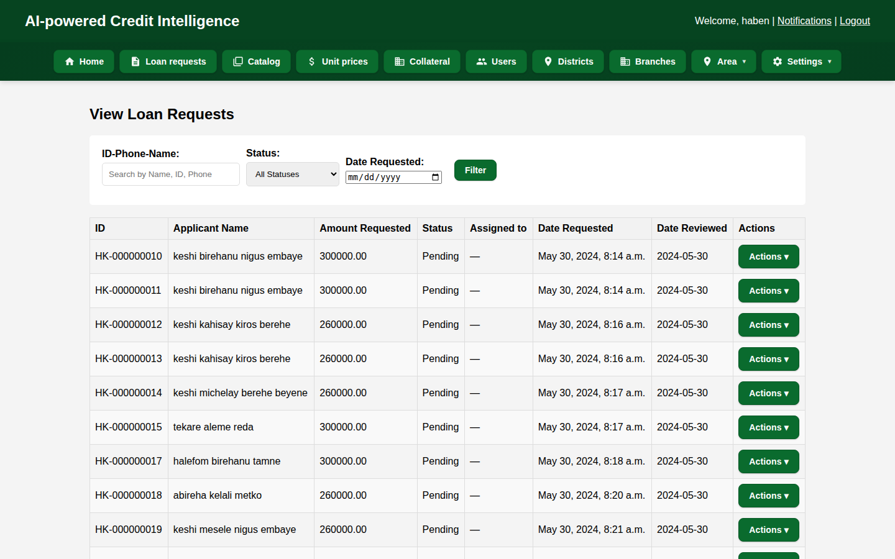
5.3 Loan detail — one record for every actor
From a single loan detail page, officers and managers see applicant context, documents, appraisal progress, collateral links, and next actions — ending the “file hunting” culture.
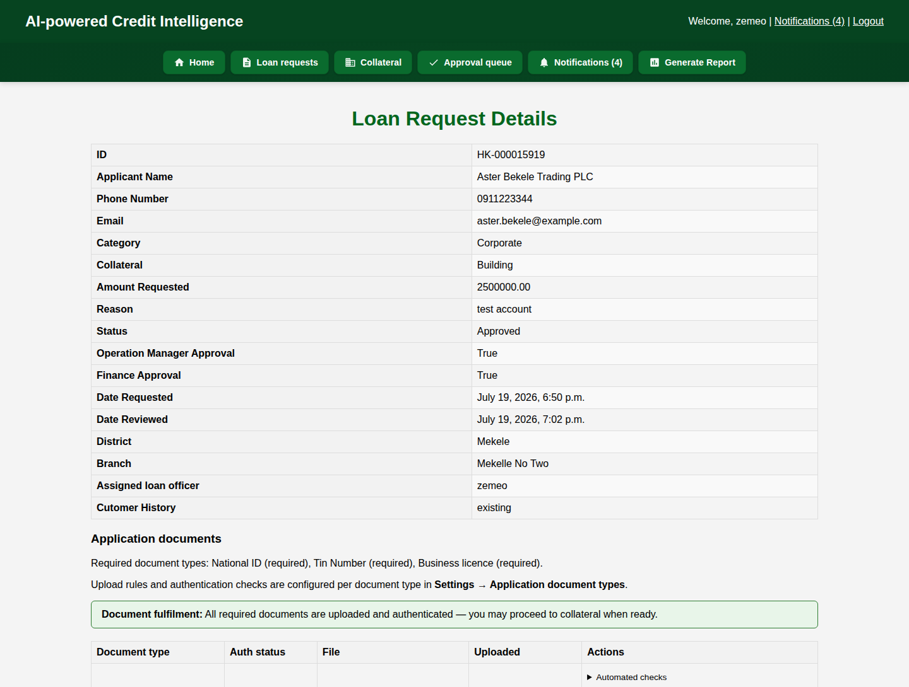
6. Module A — Intake & Document Authentication
Problem solved: Incomplete packs, weak identity assurance, trusted-but-unchecked attachments, repeated branch visits.
6.1 Create loan request (branch manager)
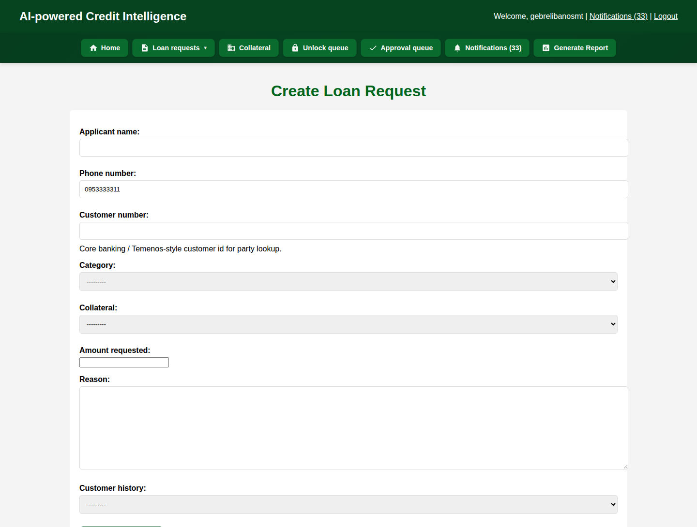
6.2 Application documents with auth workflow
- Configurable required document types (e.g. National ID, TIN, Business licence)
- Pre-upload validation: extension, size, MIME/type, content checks
- OCR in English + Amharic
- Identity matching on name / phone / TIN (optional business name)
- Statuses: Pending → Auto-passed → Needs manual review → Verified / Rejected
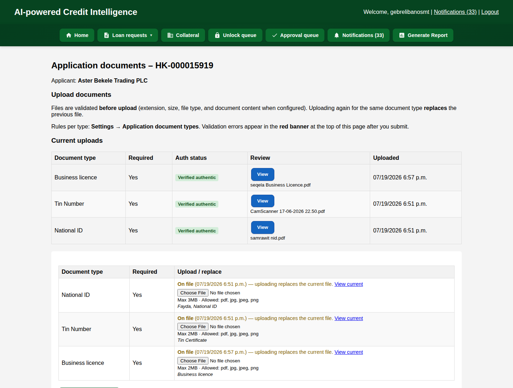
Bank benefit: Higher first-time completeness (target 95%+), fewer fraud gaps, cleaner files entering credit analysis.
7. Module B — 7-Step Cashflow Appraisal
Problem solved: Shadow Excel files and inconsistent underwriting across branches. Seqela digitizes DBE’s cashflow-based MSME methodology (with a corporate mode) as a guided wizard — same credit language officers already learned from the workbook.
| Step | MSME | Corporate | Locks in |
|---|---|---|---|
| 1 | Basic info & loan request | Entity KYC / legal registration | CBS/OCR provenance |
| 2 | Business & character (10 factors) | Governance & character | ≥75% qualitative gate |
| 3 | Cashflow / DSCR / stress | Financial statements & ratios | Capacity vs ask |
| 4 | E&S — 21 items, 5 sections | PASS / ACTIONS / REJECT | |
| 5 | Collateral worksheet | Coverage from field valuation | |
| 6 | Summary, scorecard, recommendation | Approve / Decline / Escalate | |
| 7 | Repayment & amortization | Schedule for booking | |
7.1 Sheet 1 — Basic info with core banking prefill
Customer number lookup fills empty fields. Conflicts are listed for officer Accept (banking wins). Every field shows provenance: Core banking / OCR / Officer.
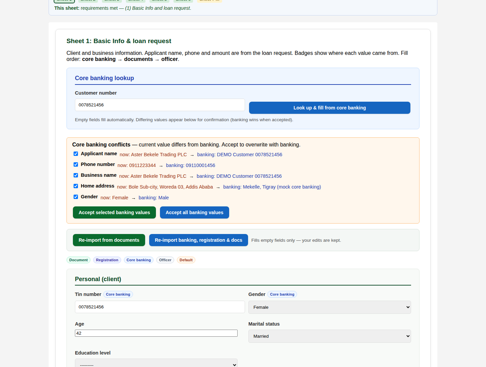
7.2 Sheet 2 — Business & character (qualitative)
Ten weighted factors (MSME) or governance factors (corporate). Default pass gate: ≥75%. Excel-faithful rating lists keep officer language familiar.
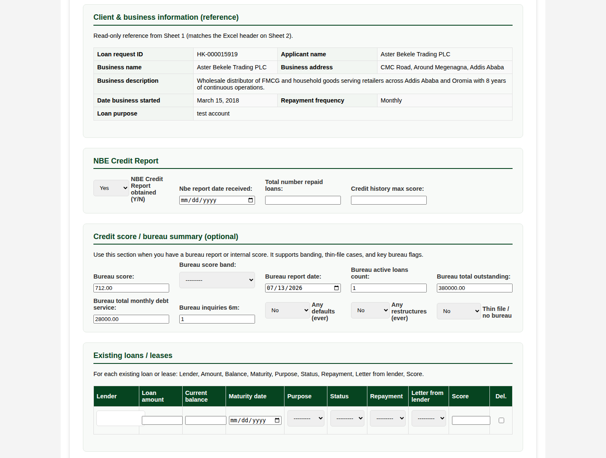
7.3 Sheet 3 — Cashflow, DSCR & stress
Monthly P&L, net cashflow, monthly/annual DSCR, stress test (sales drop / cost increase), max loan capacity, balance-sheet ratios, and a 12-month cashflow grid with “seed from averages.”
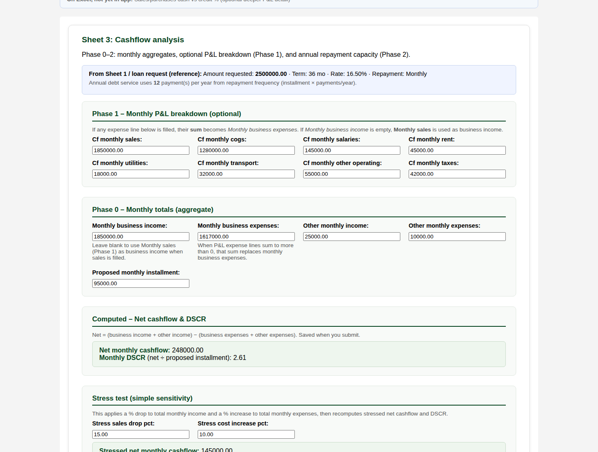
7.4 Sheets 4–7 — E&S, collateral, decision, amortization
Sheet 4 — E&S
21 checklist items in 5 sections; risk Low/Medium/High; eligibility PASS / PASS WITH ACTION POINTS / REJECT; sign-off trail.
Sheet 5 — Collateral worksheet
Prefills from field valuation; coverage ratio visible before decision.
Sheet 6 — Summary & decision
4-pillar scorecard, strengths/weaknesses, recommendation, recommended amount (drives committee routing).
Sheet 7 — Amortization
Generate repayment schedule for committee and CBS booking.
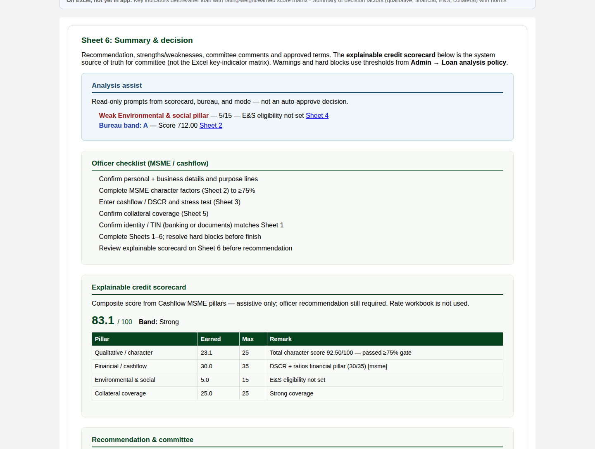
Sheet 4 — Environmental & Social
21 checklist items across 5 sections; risk Low/Medium/High; eligibility PASS / PASS WITH ACTION POINTS / REJECT.
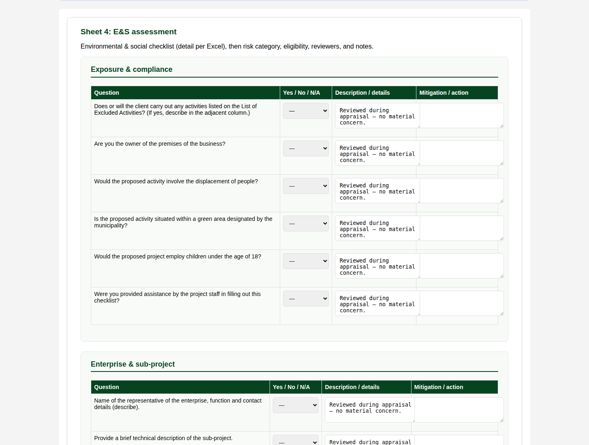
7B. Corporate Appraisal Mode — Same Wizard, Different Depth
AI-powered Credit Intelligence is not MSME-only. When the loan product is configured as Corporate, the same seven-step wizard switches labels, KYC depth, qualitative factors, and financial statement fields — so commercial/corporate credit officers work in one platform.
MSME mode (shown earlier)
- Business & character (10 MSME factors)
- Cashflow analysis / monthly grid
- Owner/operator KYC focus
Corporate mode (this section)
- Governance & character (board, audit, covenants)
- Financial statements & cashflow + ratios
- Legal registration, directors & UBO summary
Live demo file: Horizon Agro Industries PLC — Corporate Term Loan — ETB 15,000,000 — Bishoftu Industrial Park, Ethiopia.
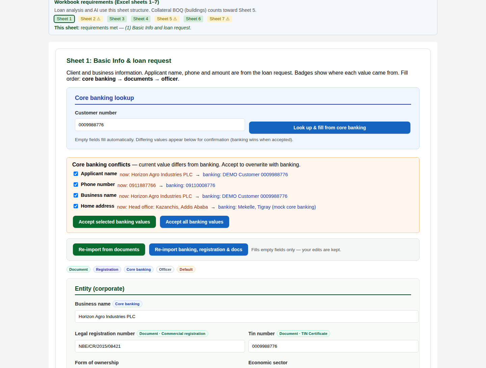
Corporate Sheet 2 — Governance & character
Ten corporate qualitative factors (board/governance, management depth, financial discipline, transparency, related-party, industry position, shareholder stability, audit quality, covenant compliance, reputation) with the same ≥75% pass gate.
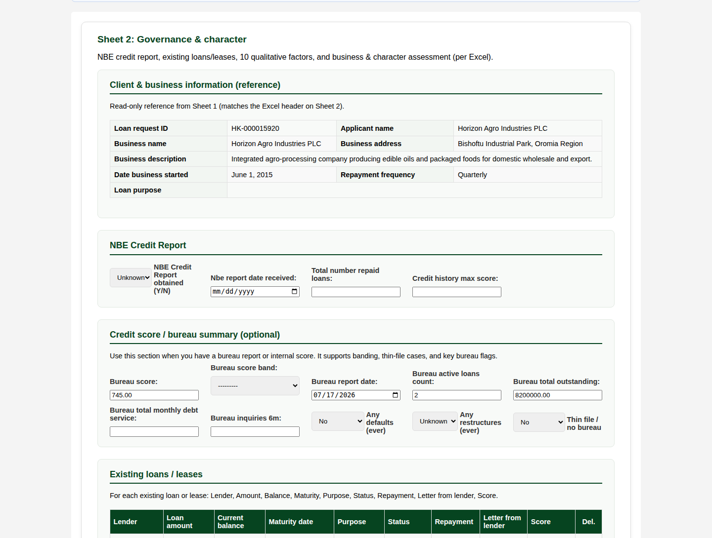
Corporate Sheet 3 — Financial statements & cashflow
Corporate annual revenue / operating profit, balance-sheet ratios, DSCR and stress testing — sized for larger facilities.
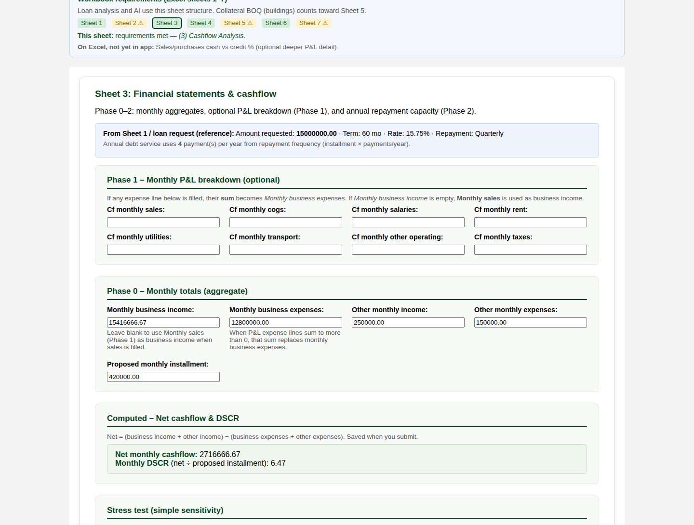
Corporate decision pack
Sheet 6 recommendation and the committee pack use the same explainable scorecard — Strong band in this demo — so corporate files enter the same approval factory as MSME.
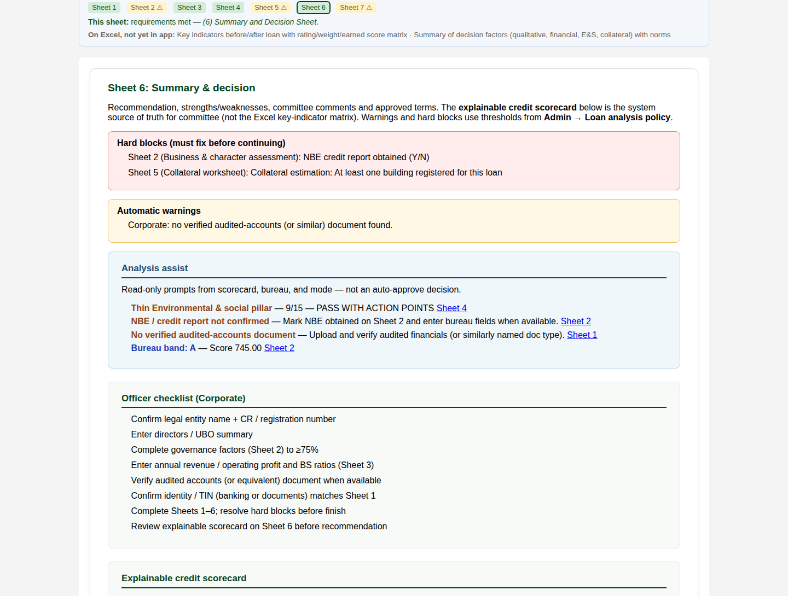
Corporate committee appraisal pack
Read-only pack for Horizon Agro Industries PLC — same explainable scorecard factory as MSME.
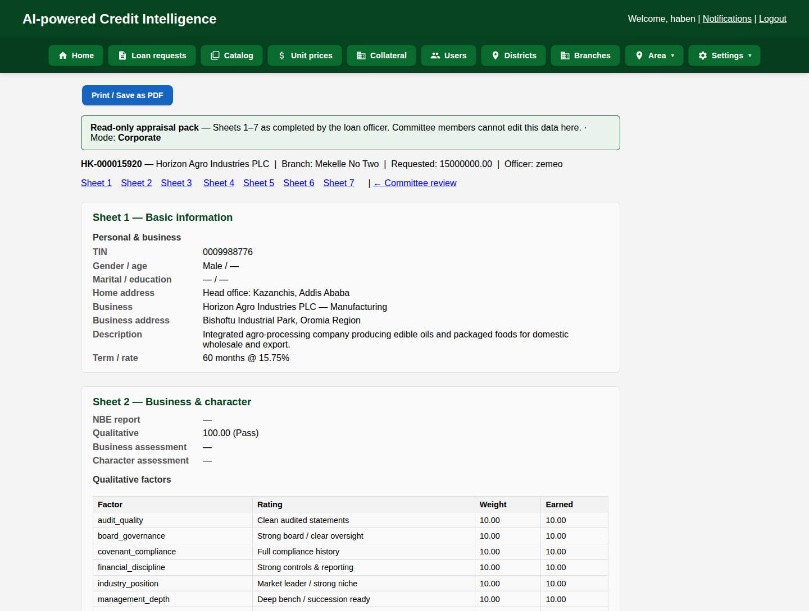
8. Module C — Scorecard, Gates & Analysis Assist
Problem solved: Subjective “gut feel” decisions and files that reach committee before policy is met.
8.1 Explainable 4-pillar score (/100)
| Pillar | Weight | What it measures |
|---|---|---|
| Qualitative / character | 25 | Sheet 2 business & character quality |
| Financial / cashflow | 35 | DSCR, stress DSCR, capacity vs ask, ratios |
| Environmental & social | 15 | Risk category & eligibility outcome |
| Collateral coverage | 25 | Coverage vs ask (e.g. ≥1.5× full points) |
Bands: Strong ≥80 · Acceptable ≥60 · Weak ≥40 · Unacceptable <40.
8.2 Hard policy gates (bank-configurable)
- Qualitative <75% → hard block
- E&S REJECT → hard block
- Annual / stressed DSCR <1.0 → hard block
- Bureau defaults → hard block option
- Incomplete sheets 1–6 → cannot finish
- Collateral coverage warning at policy minimum (default 1.0×)
8.3 Analysis Assist — decision support, not auto-approve
Surfaces weak/thin pillars, ask vs max cashflow capacity, bureau flags (thin file, defaults, score/band), corporate registration/audit flags, and hard blocks — so officers fix issues before committee waste.
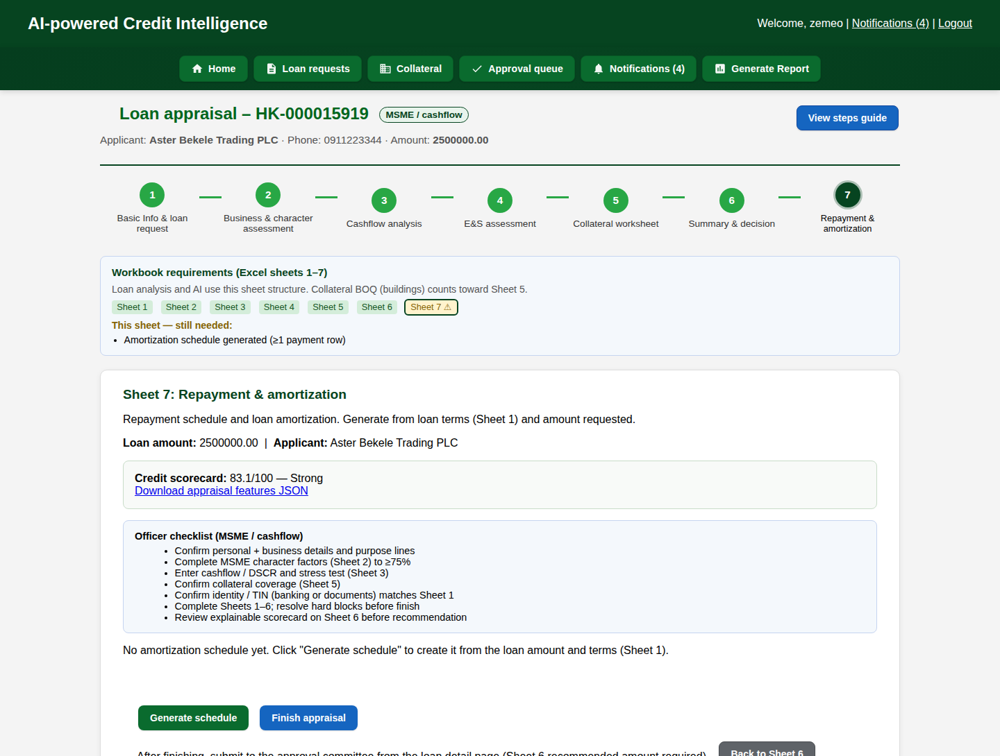
9. Module D — GPS Collateral & Evidence Packs
Problem solved: WhatsApp photo chaos, unclear site presence, disputed coverage, weak dual control.
9.1 Field visit with offline sync & map verification
- Building BOQ (construction catalog × woreda unit prices), land, other/movable
- GPS site mark with accuracy; EXIF vs live GPS mismatch warnings
- Min photos (e.g. 5 building / 3 land); photo distance policy (default 200m)
- Offline tablet PWA: prepare offline → capture → Sync now
- Lock after submit; supervised unlock; engineering QA pipeline
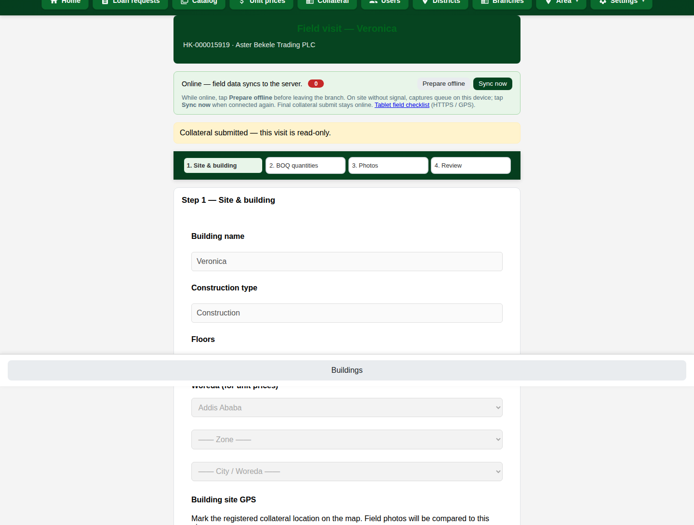
9.2 Collateral evidence pack for committee & audit
One dossier: coverage vs ask, policy checks, BOQ summary, GPS-tagged photos, map, and recent audit events — with Print/PDF, Export JSON, Export ZIP.
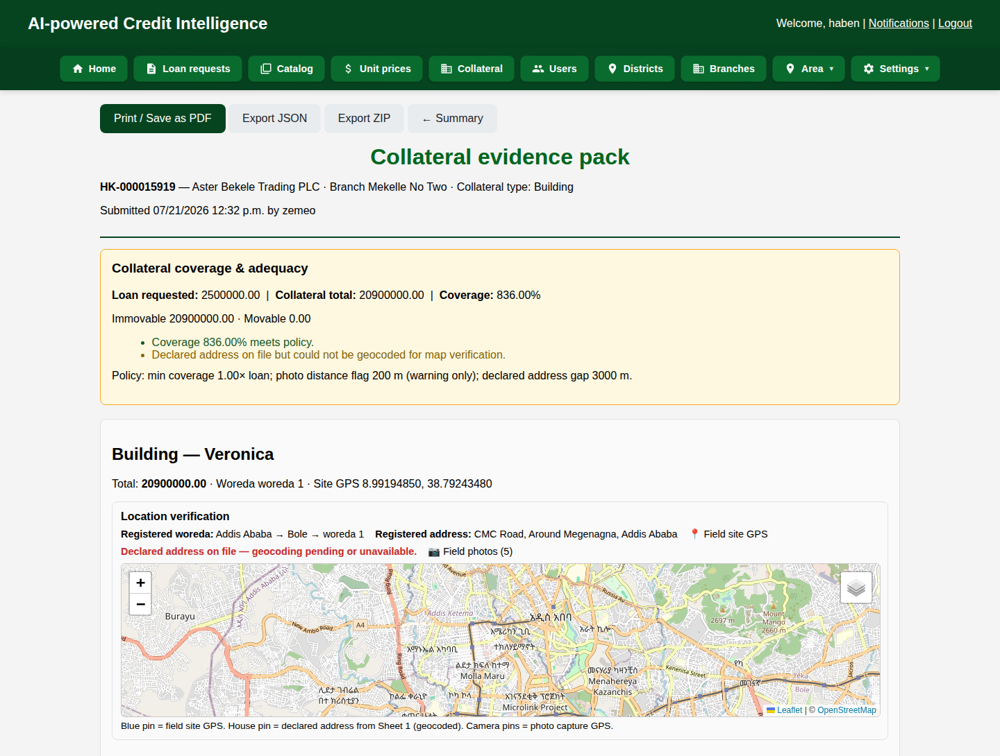
9.3 Policy configuration
Bank risk teams tune min photos, GPS accuracy thresholds, coverage minimums, and distance flags — without code changes.
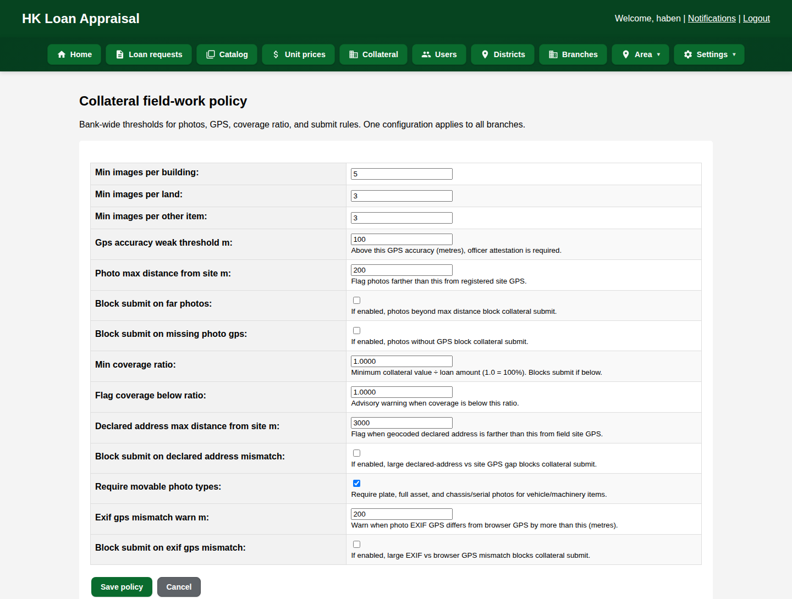
Bank benefit: Committee-ready proof; dual control; rural-ready offline capture; reconstructable audit.
10. Module E — Approval Committee (live screenshots)
Problem solved: Incomplete packs, unclear routing, slow sequential sign-offs, and opaque returns. This section shows the actual committee workflow from the running system.
10.1 Officer submits to the approval committee
After Sheets 1–7 are finished, the loan officer submits the file to the configured Branch → District → Head Office → Management pathway, with optional notes for voters.
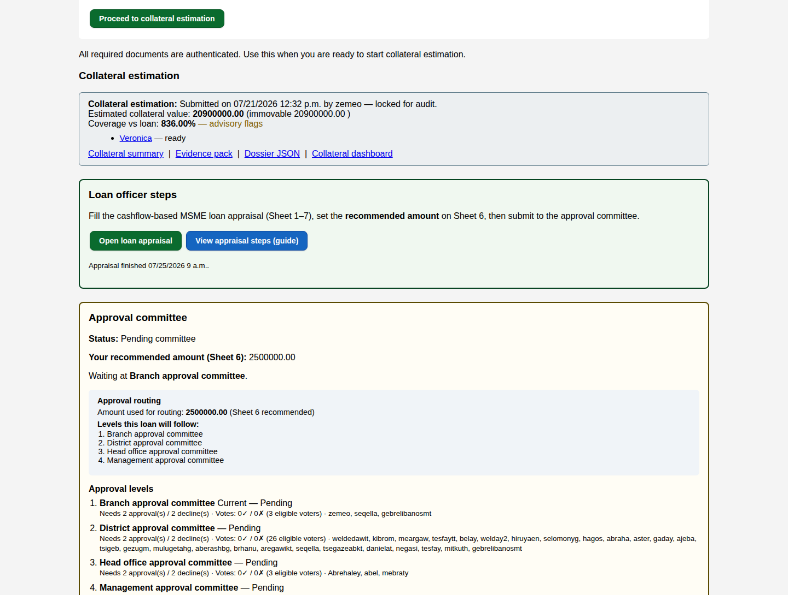
10.2 My approval queue — votes waiting for you
Committee members open a dedicated queue of loans requiring their vote at the current level — no chasing paper files across desks.
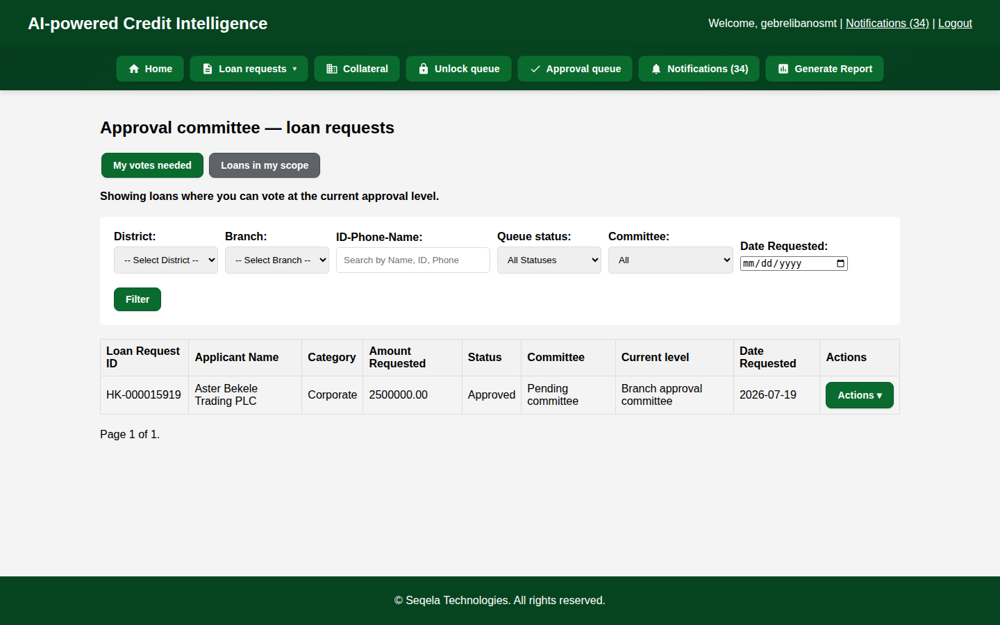
10.3 Cast your vote at the current level
Voters see overall status, current level, approval routing/pipeline, Sheet 6 recommendation summary, link to the full appraisal pack, and a vote form (Approve / Decline, amount supported, comments). They can also return to loan officer with required feedback.
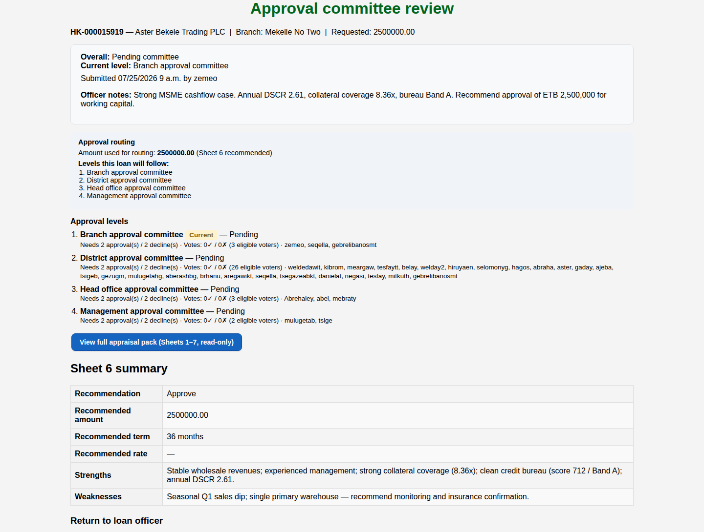
10.4 One-screen committee appraisal pack
Before voting, members open a read-only pack covering Sheets 1–7 — scorecard, cashflow/DSCR, E&S, collateral coverage, strengths/weaknesses — Print/PDF ready.
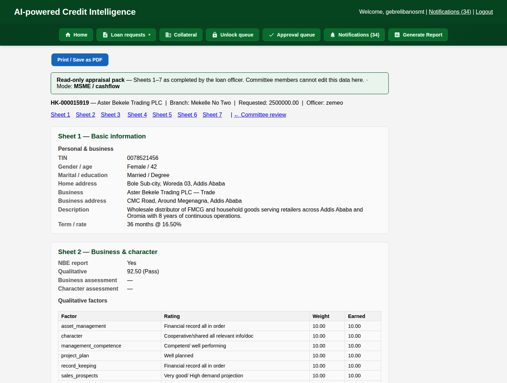
10.5 Amount-routed levels (configurable per bank / MFI policy)
| Level | Typical voters | Default votes |
|---|---|---|
| Branch | Loan officer, branch manager, accountant | Min 2 approve / 2 decline |
| District | District manager + peers | 2 / 2 |
| Head office | Ops, finance, credit committee | 2 / 2 |
| Management | CEO / VP / board as configured | 2 / 2 |
Outcomes: Approve · Decline · Return to officer with notes. Operations/finance queues provide pre-committee control when configured.
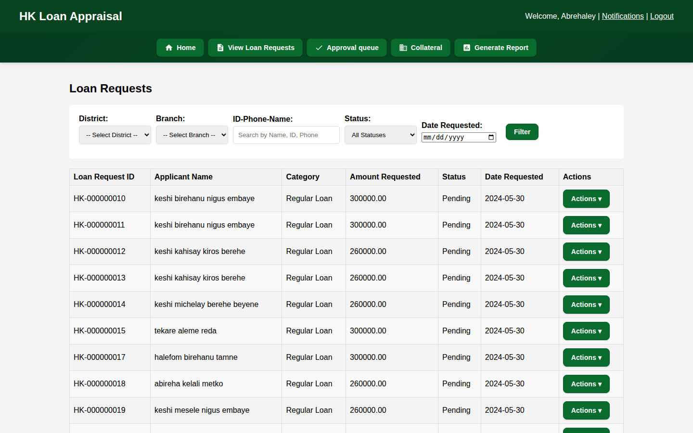
12. Partnership Model with DBE
Seqela proposes DBE as the methodology owner and sector champion; Seqela as the technology operator; banks and MFIs as adopting institutions.
DBE role
- Endorse Excel-faithful digitization
- Co-brand / recommend to partner FIs
- Introduce via wholesale, lease, TA channels
- Guide policy thresholds & MSME priority sectors
- Optional: use platform internally
Seqela role
- Host / deploy / support the platform
- Configure products, gates, hierarchy per FI
- Train credit & field teams
- Integrate CBS customer prefill where available
- Maintain Excel-faithful methodology updates
Bank / MFI role
- Adopt standard appraisal workflow
- Pilot selected branches / products
- Align committee thresholds to policy
- Measure cycle time & portfolio quality KPIs
- Scale network-wide after pilot
Partnership mechanisms DBE can use
| Mechanism | How it helps |
|---|---|
| Official recommendation | Letter / circular to banks & MFIs that the digital factory is the preferred implementation of the cashflow MSME workbook |
| Co-branded rollout | “DBE methodology · Seqela platform” for credibility and faster FI buy-in |
| Wholesale / on-lending conditionality | Where appropriate, encourage partner FIs to use standard digital appraisal for MSME lines |
| Technical assistance bundling | Include configuration & training in MSME capacity programs DBE already leads or co-leads |
| Affordability facility | Volume pricing, shared instance tiers, or donor/TA co-funding so MFIs are not priced out |
13. Affordability Path for Banks & MFIs
The Excel was shared to raise standards. Software must not recreate a new exclusion — where only large banks can digitize.
Design principles
- One core product — configure, don’t rebuild
- Tiered packages by FI size (MFI / mid bank / large bank)
- Shared cloud or private deploy options
- Pilot-first commercials (fixed scope)
- Training included in implementation
How DBE makes it affordable
- Volume commitment across FI cohort → lower unit price
- Co-fund TA / training from development programs
- Prefer shared multi-tenant for small MFIs
- Phased modules (appraisal-first, then collateral/committee)
- Transparent SLA & support for rural branches
Illustrative adoption path (to be agreed)
| Tier | Typical institution | Entry model |
|---|---|---|
| A | Small / mid MFI | Shared instance · appraisal + documents · capped users |
| B | Large MFI / mid bank | Dedicated instance · full modules · CBS prefill |
| C | Large bank / DBE optional | Private deploy · SSO / deeper integration · custom policy packs |
Detailed commercials are issued after discovery confirms cohort size, hosting model, and DBE’s preferred partnership instrument.
14. Reference Case — DECSI
Designed around Dedebit Credit and Savings Institution (DECSI) practices — branch → district → HO, construction-based building valuation, and cashflow MSME appraisal aligned to the same Excel-faithful sheets.
Expected operational benefits: 50–70% wait-time reduction, weeks-to-days multi-level approvals, 95%+ document completeness.
Reference: Tsige Bayray, Vice Chief of IT, DECSI · +251 914 701 978.
15. Implementation & Sector Rollout Roadmap
| Phase | Timing | Focus |
|---|---|---|
| Discovery with DBE | Month 1 | Confirm Excel sheet mapping, policy gates, FI cohort shortlist, affordability instrument, KPIs |
| Reference configuration | Months 2–3 | DBE-endorsed template; branding options; pilot FI setup; training curriculum |
| Pilot cohort | Months 4–5 | 2–4 banks/MFIs live; parallel-run vs Excel; committee UAT; KPI dashboard |
| Scale | Month 6+ | Expand FI network; optional DBE internal use; continuous methodology updates with DBE Credit |
Pilot success metrics (agreed upfront): cycle time vs Excel baseline, sheet completeness %, committee return rate, DSCR gate adherence, audit retrieval time, FI satisfaction.
16. Next Steps & Decision Request
- 90-minute live demonstration for DBE Credit, MSME/Lease, IT, and Partnerships — walk the DBE sheets in the live system
- Joint discovery workshop: Excel → digital field mapping + affordability options
- Select pilot FI cohort (mix of bank + MFI)
- Issue partnership SOW / MoU draft and commercial framework for the cohort
Seqela · info@seqela.com · +251 964 790 724 · seqela.com
17. Closing
DBE already did the hardest intellectual work: defining a cashflow-based MSME appraisal standard and sharing it with the sector. Seqela has done the next step: turning that standard into a governed digital factory that officers can use every day.
The Excel showed the method.
The platform makes the method inevitable.
We ask DBE to help us push this to banks and microfinance institutions — and to structure adoption so it remains affordable for the institutions that need it most.
Appendix A — Screenshot Index
| Fig | File | Shows |
|---|---|---|
| 1 | system_flow.png | End-to-end lifecycle diagram |
| 2 | 02-dashboard-home.png | Management dashboard & KPIs |
| 3 | 03-loan-list.png | Loan request pipeline |
| 4 | 04b-officer-loan-detail.png | Officer loan detail |
| 5 | 16-create-loan.png | Create loan request |
| 6 | 05-documents.png | Document auth workflow |
| 7–11 | 06-appraisal-step*.png | MSME appraisal sheets (DBE Excel-faithful) |
| 12–16 | 31-corporate-step*.png / pack | Corporate appraisal mode |
| 17–25 | collateral / committee screens | Field, evidence, vote, pack |
| 26–29 | admin / reports / checklist | Users, branches, reports, field checklist |
Appendix B — Glossary
| Term | Meaning |
|---|---|
| DBE | Development Bank of Ethiopia |
| DSCR | Debt Service Coverage Ratio — cashflow available vs debt service |
| E&S | Environmental & Social assessment |
| MFI | Microfinance Institution |
| CBS | Core Banking System |
| BOQ | Bill of Quantities — construction valuation breakdown |